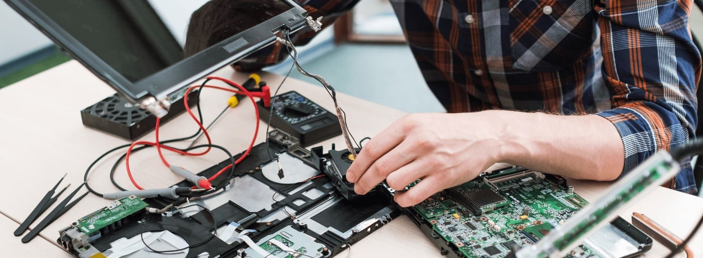
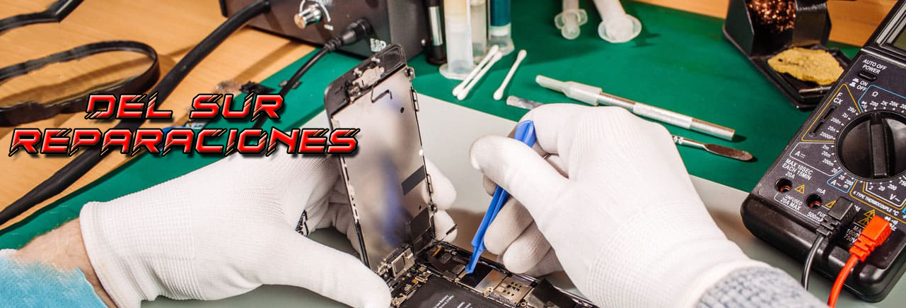

-
Reparación de celulares
Especialistas en reparación, cambios de componentes, mantenimiento y mejoramiento de equipos. Trabajamos con todas las marcas y modelos. Cambios de módulos, cambios de batería, reparaciones en general.

-
Reparación de Notebooks/Netbooks/PC
Nuestro equipo de técnicos altamente capacitados cuenta con amplia experiencia en la reparación de computadoras de escritorio y portátiles. Ofrecemos un enfoque completo y eficiente para identificar y resolver cualquier inconveniente que puedas estar experimentando, ya sea un sistema lento, virus, errores de software, problemas de hardware o cualquier otro fallo. Nuestros servicios de reparación incluyen:
► Diagnóstico preciso: Realizamos un diagnóstico exhaustivo para identificar la causa raíz del problema y ofrecerte una solución adecuada.
► Reparación de hardware: Solucionamos problemas relacionados con componentes físicos como la placa madre, la memoria RAM, el disco duro, la tarjeta gráfica, entre otros.
► Solución de problemas de software: Nos encargamos de resolver errores del sistema operativo, conflictos de software, problemas de controladores y otros inconvenientes relacionados con el software.
► Eliminación de virus y malware: Realizamos análisis y eliminación de virus, malware y programas no deseados que afectan el rendimiento y la seguridad de tu PC.
► Optimización del rendimiento: Ajustamos la configuración de tu sistema, eliminamos programas innecesarios y optimizamos el inicio para que tu PC funcione más rápido y de manera eficiente.
► Respaldo y recuperación de datos: Si has perdido archivos importantes, podemos ayudarte a recuperarlos y brindarte opciones para realizar respaldos periódicos y proteger tus datos

